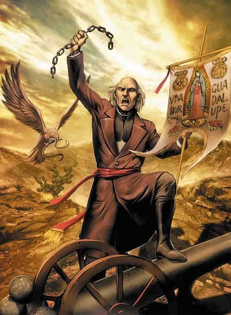
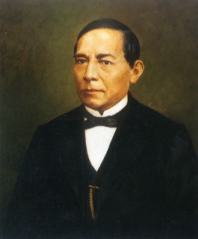
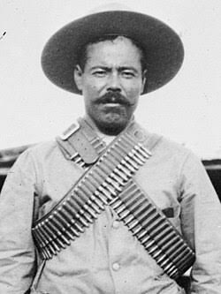

Miguel Hidalgo
Inició el movimiento de Independencia de México en 1810 con el llamado Grito de Dolores.
José María Morelos
Continuó la lucha de Independencia y propuso ideas de organización política para el nuevo país.

Benito Juárez
Presidente mexicano que defendió las leyes liberales y la República durante el siglo XIX.

Porfirio Díaz
Gobernó México durante el Porfiriato, periodo de crecimiento económico y desigualdad social.

Francisco I. Madero
Líder del movimiento revolucionario de 1910 y defensor de la democracia.

Emiliano Zapata
Defendió los derechos campesinos y el reparto de tierras con el lema "Tierra y Libertad".

Francisco Villa
Líder revolucionario del norte de México durante la Revolución Mexicana.